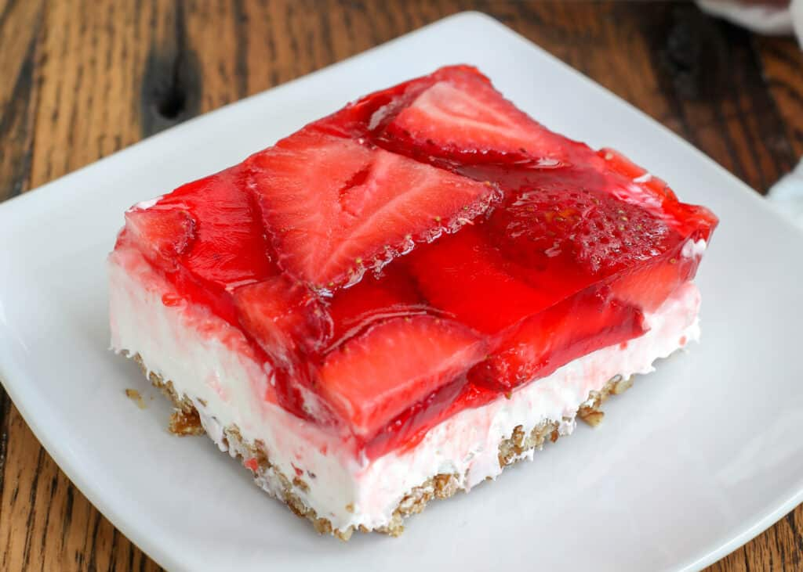

Judy's Strawberry Pretzel Salad

Description
With its many different variations, the strawberry pretzel salad seems to be amongst the most popular. The recipe is believed to have originated in the 1960s when the Joys of Jell-O cookbook was published.
This three-layer salad includes a pretzel crust, cream cheese center, and strawberry top.
Ingredients
- 1½ cups crushed pretzels
- 4½ tablespoons white sugar
- ¾ cup butter, melted
- 1 cup white sugar
- 2 (8 ounce) packages cream cheese
- 1 (8 ounce) container frozen whipped topping, thawed
- 1 (6 ounce) package strawberry flavored Jell-O®
- 2 cups boiling water
- 1 (16 ounce) package frozen strawberries
Steps
- Preheat oven to 350 degrees F (175 degrees C). Mix together the pretzels, 4 1/2 tablespoons sugar and melted butter. Press into the bottom of a 9x13 inch pan. Bake for 10 minutes, or until lightly toasted. Set aside to cool completely.
- In a medium bowl, beat the sugar and cream cheese until smooth. Fold in whipped topping. Spread evenly over the cooled crust. Refrigerate until set, about 30 minutes.
- In a medium bowl, stir together the gelatin mix and boiling water. Mix in frozen strawberries, and stir until thawed. Pour over cream cheese mixture in pan. Refrigerate until completely chilled, at least 1 hour.